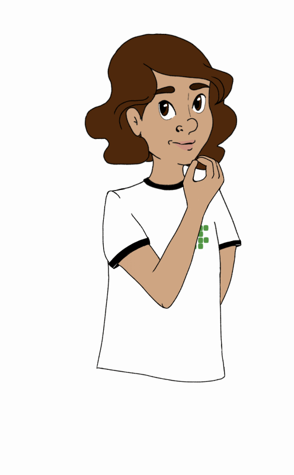

Bem-vindo(a)!
Aprender Libras é mais que aprender um idioma, é inclusão, direito, respeito, comunicação e acessibilidade. Aqui você vai aprender sinais básicos e comunicação em situações do dia a dia.
O que é Libras?
Libras é a sigla da Língua Brasileira de Sinais, uma língua gestual-visual que permite comunicação por gestos, expressões faciais e corporais. É um meio reconhecido de comunicação desde 24 de abril de 2002, pela Lei nº 10. 436. A Libras é amplamente utilizada na comunicação com surdos, sendo uma importante ferramenta de inclusão social.